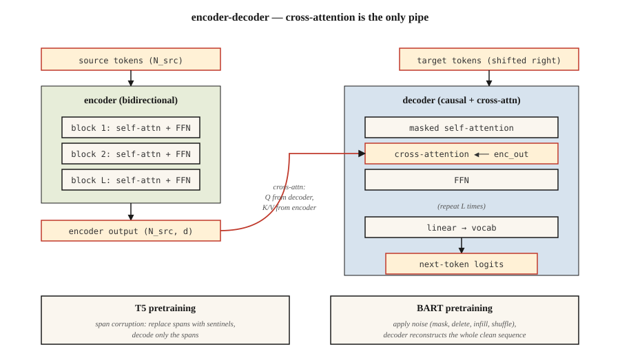

T5, BART — Encoder-Decoder Models
Encoders understand. Decoders generate. Put them back together and you get a model built for input → output tasks: translate, summarize, rewrite, transcribe.
- Type
- Learn
- Languages
- Python
- Prerequisites
- Phase 7 · 05 (Full Transformer), Phase 7 · 06 (BERT), Phase 7 · 07 (GPT)
- Time
- ~45 minutes
#The Problem
Decoder-only GPT and encoder-only BERT each strip down the 2017 architecture for a different goal. But many tasks are naturally input-output:
- Translation: English → French.
- Summarization: 5,000-token article → 200-token summary.
- Speech recognition: audio tokens → text tokens.
- Structured extraction: prose → JSON.
For these, encoder-decoder makes the cleanest fit. The encoder produces a dense representation of the source. The decoder generates the output, cross-attending to that representation at every step. Training is shift-by-one on the output side. Same loss as GPT, just conditioned on the encoder output.
Two papers defined the modern playbook:
- T5 (Raffel et al. 2019). "Text-to-Text Transfer Transformer." Every NLP task reframed as text-in, text-out. Single architecture, single vocabulary, single loss. Pretrained on masked span prediction (corrupt spans in the input, decode them in the output).
- BART (Lewis et al. 2019). "Bidirectional and Auto-Regressive Transformer." Denoising autoencoder: corrupt input in multiple ways (shuffle, mask, delete, rotate), ask the decoder to reconstruct the original.
In 2026 the encoder-decoder format lives on where input structure matters:
- Whisper (speech → text).
- Google's translation stack.
- Some code-completion / repair models that have distinct context-and-edit structures.
- Flan-T5 and variants for structured reasoning tasks.
Decoder-only won the spotlight, but encoder-decoder never went away.
#The Concept

#The forward loop
source tokens ─▶ encoder ─▶ (N_src, d_model) ──┐
│
target tokens ─▶ decoder block │
├─▶ masked self-attention │
├─▶ cross-attention ◀───────────┘
└─▶ FFN
↓
next-token logitsCrucially, the encoder runs once per input. The decoder runs autoregressively but cross-attends to the same encoder output at every step. Caching the encoder output is a free speedup for long inputs.
#T5 pretraining — span corruption
Pick random spans of the input (average length 3 tokens, 15% total). Replace each span with a unique sentinel: <extra_id_0>, <extra_id_1>, etc. The decoder outputs only the corrupted spans with their sentinel prefix:
source: The quick <extra_id_0> fox jumps <extra_id_1> dog
target: <extra_id_0> brown <extra_id_1> over the lazyCheaper signal than predicting the whole sequence. Competitive with MLM (BERT) and prefix-LM (UniLM) in the T5 paper's ablation.
#BART pretraining — multi-noise denoising
BART tries five noising functions:
- Token masking.
- Token deletion.
- Text infilling (mask a span, decoder inserts the right length).
- Sentence permutation.
- Document rotation.
Combining text infilling + sentence permutation produced the best downstream numbers. The decoder always reconstructs the original. BART's output is the full sequence, not just the corrupted spans — so pretraining compute is higher than T5.
#Inference
Same autoregressive generation as GPT. Greedy / beam / top-p sampling apply. Beam search (width 4–5) is standard for translation and summarization because the output distribution is narrower than chat.
#When to pick each variant in 2026
| Task | Encoder-decoder? | Why |
|---|---|---|
| Translation | Yes, usually | Clear source sequence; fixed output distribution; beam search works |
| Speech-to-text | Yes (Whisper) | Input modality differs from output; encoder shapes audio features |
| Chat / reasoning | No, decoder-only | No persistent "input" — the conversation is the sequence |
| Code completion | Usually no | Decoder-only with long context wins; code models like Qwen 2.5 Coder are decoder-only |
| Summarization | Either works | BART, PEGASUS beat earlier decoder-only baselines; modern decoder-only LLMs match them |
| Structured extraction | Either | T5 is clean because "text → text" absorbs any output format |
The trend since ~2022: decoder-only takes over tasks that encoder-decoder used to own because (a) instruction-tuned decoder-only LLMs generalize to anything via prompting, (b) one architecture scales easier than two, (c) RLHF assumes a decoder. Encoder-decoder holds on where input modality differs (speech, images) or where beam search quality matters.
#Build It
See code/main.py. We implement T5-style span corruption for a toy corpus — the most useful single piece of this lesson because it shows up in every encoder-decoder pretraining recipe since.
#Step 1: span corruption
def corrupt_spans(tokens, mask_rate=0.15, mean_span=3.0, rng=None):
"""Pick spans summing to ~mask_rate of tokens. Return (corrupted_input, target)."""
n = len(tokens)
n_mask = max(1, int(n * mask_rate))
n_spans = max(1, int(round(n_mask / mean_span)))
...The target format is the T5 convention: <sent0> span0 <sent1> span1 .... The corrupted input interleaves unchanged tokens with the sentinel tokens at span locations.
#Step 2: verify round-trip
Given the corrupted input and target, reconstruct the original sentence. If your corruption is reversible, the forward pass is well-defined. This is a sanity check — real training never does this, but the test is cheap and catches off-by-one bugs in your span bookkeeping.
#Step 3: BART noising
Five functions: token_mask, token_delete, text_infill, sentence_permute, document_rotate. Compose two of them and show the result.
#Use It
HuggingFace reference:
from transformers import T5ForConditionalGeneration, T5Tokenizer
tok = T5Tokenizer.from_pretrained("google/flan-t5-base")
model = T5ForConditionalGeneration.from_pretrained("google/flan-t5-base")
inputs = tok("translate English to French: Attention is all you need.", return_tensors="pt")
out = model.generate(**inputs, max_new_tokens=32)
print(tok.decode(out[0], skip_special_tokens=True))The T5 trick: the task name goes into the input text. Same model handles dozens of tasks because each task is text-in, text-out. In 2026 this pattern has been generalized by instruction-tuned decoder-only models, but T5 codified it first.
#Ship It
See outputs/skill-seq2seq-picker.md. The skill picks between encoder-decoder and decoder-only for a new task given input-output structure, latency, and quality targets.
#Exercises
- Easy. Run
code/main.py, apply span corruption to a 30-token sentence, verify that concatenating the non-sentinel source tokens with the decoded target spans reproduces the original. - Medium. Implement BART's
text_infillnoise: replace random spans with a single<mask>token, and the decoder must infer the correct span length plus contents. Show one example. - Hard. Fine-tune
flan-t5-smallon a tiny English → pig-Latin corpus (200 pairs). Measure BLEU on a held-out 50-pair set. Compare against fine-tuningLlama-3.2-1Bon the same data with the same compute.
#Key Terms
| Term | What people say | What it actually means |
|---|---|---|
| Encoder-decoder | "Seq2seq transformer" | Two stacks: bidirectional encoder for input, causal decoder with cross-attention for output. |
| Cross-attention | "Where source talks to target" | Decoder's Q × encoder's K/V. The only place encoder information enters the decoder. |
| Span corruption | "T5's pretraining trick" | Replace random spans with sentinel tokens; decoder outputs the spans. |
| Denoising objective | "BART's game" | Apply a noise function to the input, train the decoder to reconstruct the clean sequence. |
| Sentinel token | "The <extra_id_N> placeholder" |
Special tokens that tag corrupted spans in the source and re-tag them in the target. |
| Flan | "Instruction-tuned T5" | T5 fine-tuned on >1,800 tasks; made encoder-decoder competitive at instruction-following. |
| Beam search | "Decoding strategy" | Keep top-k partial sequences at each step; standard for translation/summarization. |
| Teacher forcing | "Training-time input" | During training, feed the true previous output token to the decoder, not the sampled one. |
#Further Reading
- Raffel et al. (2019). Exploring the Limits of Transfer Learning with a Unified Text-to-Text Transformer — T5.
- Lewis et al. (2019). BART: Denoising Sequence-to-Sequence Pre-training for Natural Language Generation, Translation, and Comprehension — BART.
- Chung et al. (2022). Scaling Instruction-Finetuned Language Models — Flan-T5.
- Radford et al. (2022). Robust Speech Recognition via Large-Scale Weak Supervision — Whisper, the canonical 2026 encoder-decoder.
- HuggingFace
modeling_t5.py— reference implementation.
Nice. That's 5 minutes of Transformers Deep Dive behind you.
Continue to Vision Transformers (ViT) →